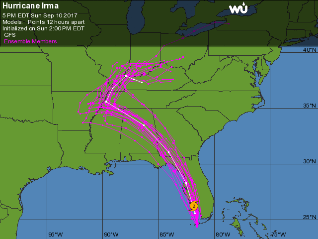
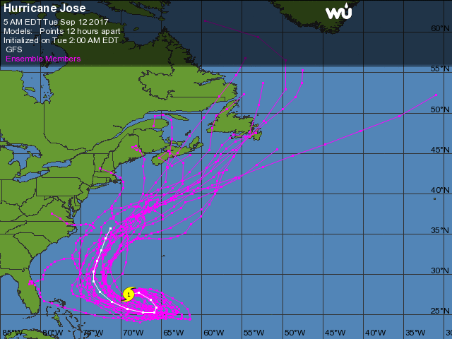
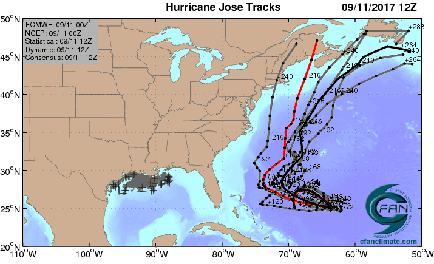
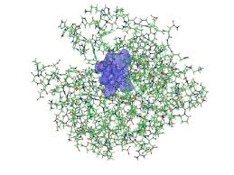

Who?
- Unit of Lehigh's Library & Technology Services within the Center for Innovation in Teaching & Learning
Our Mission
- We enable Lehigh Faculty, Researchers and Scholars achieve their goals by providing various computational resources; hardware, software, and storage; consulting and training.
Research Computing Staff
- Alex Pacheco, Manager & XSEDE Campus Champion
- Steve Anthony, HPC User Support & System Administrator
- Dan Brashler, Computing Consultant
Lehigh University Research Computing
Library & Technology Services
https://researchcomputing.lehigh.edu
About Us?
What do we do?
- Hardware Support
- Provide system administration and support for Lehigh's HPC clusters.
- 2 University owned and 4 Faculty owned
- Assist with purchase, installation and administration of servers and clusters.
- Provide system administration and support for Lehigh's HPC clusters.
- Data Storage
- Provide data management services including storing and sharing data.
- Software Support
- Provide technical support for software applications, install software as requested and assist with purchase of software.
- Training & Consulting
- Provide education and training programs to facilitate use of HPC resources and general scientific computing needs.
- Provide consultation and support for code development and visualization.
Background and Defintions
- Computational Science and Engineering
- Gain understanding, mainly through the analysis of mathematical models implemented on computers.
- Construct mathematical models and quantitative analysis techniques, using computers to analyze and solve scientific problems.
- Typically, these models require large amount of floating-point calculations not possible on desktops and laptops.
- The field's growth drove the need for HPC and benefited from it.
- HPC
- High Performance Computing (HPC) is computation at the forefront of modern technology, often done on a supercomputer.
- Supercomputer
- A supercomputer is a computer at the frontline of current processing capacity, particularly speed of calculation.
Why use HPC?
- HPC may be the only way to achieve computational goals in a given amount of time
- Size: Many problems that are interesting to scientists and engineers cannot fit on a PC usually because they need more than a few GB of RAM, or more than a few hundred GB of disk.
- Speed: Many problems that are interesting to scientists and engineers would take a very long time to run on a PC: months or even years; but a problem that would take a month on a PC might only take a few hours on a supercomputer
  
Parallel Computing
- many calculations are carried out simultaneously
- based on principle that large problems can often be divided into smaller ones, which are then solved in parallel
- Parallel computers can be roughly classified according to the level at which the hardware supports parallelism.
- Multicore computing
- Symmetric multiprocessing
- Distributed computing
- Grid computing
- General-purpose computing on graphics processing units (GPGPU)
What does HPC do?
- Simulation of Physical Phenomena
- Storm Surge Prediction
- Black Holes Colliding
- Molecular Dynamics
- Data analysis and Mining
- Bioinformatics
- Signal Processing
- Fraud detection
- Visualization
- Design
- Supersonic ballute
- Boeing 787 design
- Drug Discovery
- Oil Exploration and Production
- Automotive Design
- Art and Entertainment

HPC by Disciplines
- Traditional Disciplines
- Science: Physics, Chemistry, Biology, Material Science
- Engineering: Mechanical, Structural, Civil, Environmental
- Non Traditional Disciplines
- Finance
- Preditive Analytics
- Trading
- Humanities
- Culturomics or cultural analytics: study human behavior and cultural trends through quantitative analysis of digitized texts, images and videos.
- Finance
Research Computing Resources
Maia
- Free 32-core Symmetric Multiprocessor (SMP) system available to all Lehigh Faculty, Staff and Students
- dual 16-core AMD Opteron 6380 2.5GHz CPU
- 128GB RAM and 4TB HDD
- Theoretical Performance: 640 GFLOPs (640 billion floating point operations per second)
- Each AMD Opteron 6380 (Piledriver) CPU is capable of 8 FLOPs
- Access: Batch Scheduled, no interactive access to Maia
\[ GFLOPs = cores \times clock \times \frac{FLOPs}{cycle} \]
Research Computing Resources
- Sol (Target production date October 1, 2016)
- Lehigh's Flagship High Performance Computing Cluster
- 9 nodes, dual 10-core Intel Xeon E5-2650 v3 2.3GHz CPU, 25MB Cache, 128GB RAM
- 33 nodes, dual 12-core Intel Xeon E5-2670 v3 2.3Ghz CPU, 30 MB Cache, 128GB RAM
- 13 nodes, dual 12-core Intel Xeon E5-2650 v4 2.3Ghz CPU, 30 MB Cache, 64GB RAM
- Two nVIDIA GTX 1080 GPU cards per node (50 GPUs operational)
- 128 GB RAM and 1TB HDD per node
- 2:1 oversubscribed Infiniband EDR (100Gb/s) interconnect fabric
- Theoretical Performance: 46.752 TFLOPs (CPU) + 28.270 TFLOPs (GPU)
- Access: Batch Scheduled, interactive on login node for compiling, editing only
Faculty Owned Resources
- Monocacy: Ben Felzer, Earth & Environmental Sciences
- Eight nodes, dual 8-core Intel Xeon E5-2650v2, 2.6GHz, 64GB RAM
- Theoretical Performance: 2.662TFlops
- Eight nodes, dual 8-core Intel Xeon E5-2650v2, 2.6GHz, 64GB RAM
- Eigen: Heather Jaeger, Chemistry
- Twenty nodes, dual 8-core Intel Xeon E5-2650v2, 2.6GHz, 64GB RAM
- Theoretical Performance: 6.656TFlops
- Twenty nodes, dual 8-core Intel Xeon E5-2650v2, 2.6GHz, 64GB RAM
- Baltrusaitislab: Jonas Baltrusaitis, Chemical Engineering
- Three nodes, dual 16-core AMD Opteron 6376, 2.3Ghz, 128GB RAM
- Theoretical Performance: 1.766TFlops
- Three nodes, dual 16-core AMD Opteron 6376, 2.3Ghz, 128GB RAM
- Pisces: Keith Moored, Mechanical Engineering and Mechanics
- Six nodes, dual 10-core Intel Xeon E5-2650v3, 2.3GHz, 64GB RAM, nVIDIA Tesla K80
- Theoretical Performance: 4.416 TFlops (CPU) + 17.46TFlops (GPU)
- To be merged with Sol in Fall 2017
- Six nodes, dual 10-core Intel Xeon E5-2650v3, 2.3GHz, 64GB RAM, nVIDIA Tesla K80
Total LTS Managed Computational Resources
| Cluster | Cores | CPU Memory | CPU TFLOPs | GPUs | CUDA Cores | GPU Memory | GPU TFLOPS |
|---|---|---|---|---|---|---|---|
| Maia | 32 | 128 | 0.640 | ||||
| Monocacy | 128 | 512 | 2.662 | ||||
| Eigen | 320 | 1280 | 6.656 | ||||
| Baltrusaitislab | 96 | 384 | 1.766 | ||||
| Pisces | 120 | 384 | 4.416 | 6 | 29952 | 144 | 17.472 |
| Sol | 1284 | 6208 | 46.752 | 110 | 281600 | 880 | 28.27 |
| Total | 1980 | 8896 | 62.893 | 116 | 311552 | 1024 | 45.742 |
Apply for an account
- Apply for an account at the LTS website
- Click on Services > Account & Password > Lehigh Computing Account > Request an account
- Click on the big blue button "Start Special Account Request" > Research Computing Account
- Maia
- Click on "FREE Linux command-line computing"
- Sol: PIs should contact Alex Pacheco or Steve Anthony, web request is not functional
Click on "Fee-based research computing"- Annual charge of $50/account paid by Lehigh Faculty or Research Staff, and
- Annual charge for computing time
Allocation Charges
- Cost per core-hour or service unit (SU) is 1¢
SU is defined as 1 hour of computing on 1 core of the Sol base compute node.
- One base compute node of Sol consumes 20 SU/hour, 480 SU/day and 175,200 SU/year
PIs can share allocations with their collaborators
- Minimum Annual Purchase of 50,000 SU - $500/year
- Additional Increments of 10,000 SU - $100 per 10K increments
- Fixed Allocation cycle: Oct 1 - Sep 30
- Unused allocations do not rollover to next allocation cycle
- Working on implementing a rolling allocation cycle, only for minimum purchase.
- Total available computing time for purchase annually: 1.4M SUs or 1 year of continous computing on 8 nodes
Example Allocation Request
- PI requires 100K SUs of computing time per year
- ❶ One Purchase:
- 100K SU for $1000/year
- ❷Multiple Purchases:
- Initial 50K SUs for $500/year.
- Multiple additional purchases of 10K SUs for $100 each as required.
- ❶ One Purchase:
All 100K SUs (❶ and ❷) must be used up by Sep. 30 of next year.
- If rolling allocation cycle is implemented, then all 100K SUs (❶ and ❷) must be used up within 1 year of initial 50K purchase.
Need more than 175K SU/year or
BECOME A CONDO INVESTOR
Condo Investments
- New sustainable model for High Performance Computing at Lehigh
- Faculty (Condo Investor) purchase compute nodes from grants to increase overall capacity of Sol
- LTS will provide for four years
- System Administration, Power and Cooling, User Support for Condo Investments
- Condo Investor
- receives annual allocation equivalent to their investment for four years
- can utilize allocations on all available nodes, including nodes from other Condo Investors
- allows idle cycles on investment to be used by other Sol users
- unused allocation will not rollover to the next allocation cycle.
- can purchase additional SUs in 10K increments (minimum 50K not required)
- and must be consumed in current allocation cycle
- Annual Allocation cycle is Oct. 1 - Sep. 30.
Condo Investors
Two at initial launch
- Dimitrios Vavylonis, Physics
- Wonpil Im, Biological Sciences
- Brian Chen, Computer Science & Engineering
- Ed Webb & Alp Oztekin, Mechanical Engineering
- Anand Jagota, Jeetain Mittal & Srinivas Rangarajan, Chemical Engineering
Total SU on Sol after Condo Investments: 11,247,840
Sol SUs available for purchase on an annual basis: 1,401,600
Storage resources
- LTS provides various storage options for research and teaching..
- Some are cloud based and subject to Lehigh's Cloud Policy
- For research, LTS provides a 1PB storage system called Ceph
- Ceph is based on the Ceph software
- Research groups can purchase a sharable project space on Ceph @ $200/TB/year
- Ceph is in-house, built, operated and administered by LTS Research Computing Staff.
- located in Data Center in EWFM with a backup cluster in Packard Lab
- HPC users can write job output directly to their Ceph volume
- Ceph volume can be mounted as a network drive on Windows or CIFS on Mac and Linux
- See Ceph FAQ for more details
- Storage quota on
- Maia: 5GB
- Sol: 150GB
Accessing Research Computing Resources
- All Research Computing resources are accessible using ssh while on Lehigh's network
ssh username@cluster.cc.lehigh.edu- where
clusteris sol, monocacy, pisces, eigen and baltrusaitislab
- where
- Maia: No direct access to Maia, instead login to the polaris
- Polaris:
ssh username@polaris.cc.lehigh.edu- Polaris is a gateway that also hosts the batch scheduler for Maia.
- No computing software including compilers is available on Polaris.
- Login to Polaris and request computing time on Maia including interactive access.
- If you are not on Lehigh's network, login to the ssh gateway to get to Research Computing resources.
ssh username@ssh.cc.lehigh.edu
Available Software
- Commercial, Free and Open source software is installed on
- Software is managed using module environment
- Why? We may have different versions of same software or software built with different compilers
- Module environment allows you to dynamically change your *nix environment based on software being used
- Standard on many University and national High Performance Computing resource since circa 2011
- How to use Sol/Maia Software on your linux workstation
Software on Sol

How does module work?
| Command | Description |
|---|---|
module avail |
show list of software available on resource |
module load abc |
add software abc to your environment (modify your PATH, LD_LIBRARY_PATH etc as needed) |
module unload abc |
remove abc from your environment |
module swap abc1 abc2 |
swap abc1 with abc2 in your environment |
module purge |
remove all modules from your environment |
module show abc |
display what variables are added or modified in your environment |
module help abc |
display help message for the module abc |
- Users who prefer not to use the module environment will need to modify their
.bashrc or .tcshrc files. Run
module showfor list variables that need modified, appended or prepended
Installed Software
- Chemistry/Materials Science
- CPMD
- GAMESS
- Gaussian
- NWCHEM
- Quantum Espresso
- VASP
- Molecular Dynamics
- Desmond
- GROMACS
- LAMMPS
- NAMD
- Computational Fluid Dynamics
- Abaqus
- Ansys
- Comsol
- OpenFOAM
- OpenSees
- Math
- GNU Octave
- Magma
- Maple
- Mathematica
- Matlab
More Software
- Scripting Languages
- R
- Perl
- Python
- Compilers
- GNU
- Intel
- PGI
- CUDA
- Parallel Programming
- MVAPICH2
- OpenMPI
- Libraries
- BLAS/LAPACK/GSL/SCALAPACK
- Boost
- FFTW
- Intel MKL
- HDF5
- NetCDF
- METIS/PARMETIS
- PetSc
- QHull/QRupdate
- SuiteSparse
- SuperLU
More Software
- Visualization Tools
- Avogadro
- GaussView
- GNUPlot
- PWGui
- PyMol
- VMD
- XCrySDen
- Other Tools
- CMake
- Lmod
- Scons
- You can always install a software in your home directory
- Stay compliant with software licensing
- Modify your .bashrc/.tcshrc to add software to your path, OR
- create a module and dynamically load it so that it doesn't interfere
with other software installed on the system
- e.g. You might want to use openmpi instead of mvapich2
- the system admin may not want install it system wide for just one user
- Add the directory where you will install the module files to the variable MODULEPATH in .bashrc/.tcshrc
# My .bashrc file
export MODULEPATH=${MODULEPATH}:/home/alp514/modulefiles
Module File Example

How to run jobs
- All compute intensive jobs are batch scheduled
- Write a script to submit jobs to a scheduler
- need to have some background in shell scripting (bash/tcsh)
- Need to specify
- Resources required (which depends on configuration)
- number of nodes
- number of processes per node
- memory per node
- How long do you want the resources
- have an estimate for how long your job will run
- Which queue to submit jobs
- Resources required (which depends on configuration)
Batch Queuing System
A software that manages resources (CPU time, memory, etc) and schedules job execution
- Sol: Simple Linux Utility for Resource Management (SLURM)
- Others: Portable Batch System (PBS)
- Scheduler: Maui
- Resource Manager: Torque
- Allocation Manager: Gold
A job can be considered as a user's request to use a certain amount of resources for a certain amount of time
The batch queuing system determines
- The order jobs are executed
- On which node(s) jobs are executed
Job Scheduling
Map jobs onto the node-time space
- Assuming CPU time is the only resource
Need to find a balance between
- Honoring the order in which jobs are received
- Maximizing resource utilization

Backfilling
- A strategy to improve utilization
- Allow a job to jump ahead of others when there are enough idle nodes
- Must not affect the estimated start time of the job with the highest priority

How much time must I request
- Ask for an amount of time that is
- Long enough for your job to complete
- As short as possible to increase the chance of backfilling


Available Queues
- Sol
| Queue Name | Max Runtime in hours | Max SU consumed node per hour |
|---|---|---|
| lts | 72 | 20 (will change to 18+2) |
| imlab | 48 | 22 |
| imlab-gpu | 48 | 24 |
| eng | 72 | 24 (will change to 22+2) |
| engc | 72 | 24 (will change to 22+2) |
| all-cpu | 48 | |
| all-gpu | 48 |
- Maia
| Queue Name | Max Runtime in hours | Max Simultaneous Core-hours |
|---|---|---|
| smp-test | 1 | 4 |
| smp | 96 | 384 |
How much memory can I use?
The amount of installed memory less the amount that is used by the operating system and other utilities
A general rule of thumb on most HPC resources: leave 1-2GB for the OS to run.
Sol: Max memory used per node should not exceed 126GB.
| Partition | Max Memory/core (GB) | Recommended Memory/Core (GB) |
|---|---|---|
| lts | 6.4 | 6.2 |
| eng/imlab/imlab-gpu | 5.3 | 5.1 |
| engc | 2.66 | 2.4 |
- Maia: Users need to specify memory required in their submit script. Max memory that should be requested is 126GB.
Useful SLURM Directives
| SLURM Directive | Description |
|---|---|
| #SBATCH --partition=queuename | Submit job to the queuename queue. |
| #SBATCH --time=hh:mm:ss | Request resources to run job for hh hours, mm minutes and ss seconds. |
| #SBATCH --nodes=m | Request resources to run job on m nodes. |
| #SBATCH --ntasks-per-node=n | Request resources to run job on n processors on each node requested. |
| #SBATCH --ntasks=n | Request resources to run job on a total of n processors. |
| #SBATCH --mem=x[M,G,T] | Request x[M,G or T]B per node requested |
| #SBATCH --job-name=jobname | Provide a name, jobname to your job. |
| #SBATCH --output=filename.out | Write SLURM standard output to file filename.out. |
| #SBATCH --error=filename.err | Write SLURM standard error to file filename.err. |
| #SBATCH --mail-type=events | Send an email after job status events is reached. |
| events can be NONE, BEGIN, END, FAIL, REQUEUE, ALL, TIME_LIMIT(_90,80) | |
| #SBATCH --mail-user=address | Address to send email. |
| #SBATCH --account=mypi | charge job to the mypi account |
Useful SLURM Directives (contd)
| SLURM Directive | Description |
|---|---|
| Request a quality of service (qos) for the job. | |
| #SBATCH --qos=nogpu | imlab partition has a qos of nogpu. |
| Job will remain in queue indefinitely if you do not specify qos | |
| Specifies a comma delimited list of generic consumable resources | |
| #SBATCH --gres=gpu:# | To use gpus on imlab-gpu partition, you need to request gpus |
| You can request 1 or 2 gpus with a minimum of 1 core or cpu per gpu |
- SLURM can also take short hand notation for the directives
| Long Form | Short Form |
|---|---|
| --partition=queuename | -p queuename |
| --time=hh:mm:ss | -t hh:mm:ss |
| --nodes=m | -N m |
| --ntasks-per-node=n | -n n |
| --ntasks=n | -n n |
| --account=mypi | -A mypi |
Useful PBS Directives
| PBS Directive | Description |
|---|---|
| #PBS -q queuename | Submit job to the queuename queue. |
| #PBS -l walltime=hh:mm:ss | Request resources to run job for hh hours, mm minutes and ss seconds. |
| #PBS -l nodes=m:ppn=n | Request resources to run job on n processors each on m nodes. |
| #PBS -l mem=xGB | Request xGB per node requested, applicable on Maia only |
| #PBS -N jobname | Provide a name, jobname to your job. |
| #PBS -o filename.out | Write PBS standard output to file filename.out. |
| #PBS -e filename.err | Write PBS standard error to file filename.err. |
| #PBS -j oe | Combine PBS standard output and error to the same file. |
| #PBS -M your email address | Address to send email. |
| #PBS -m status | Send an email after job status status is reached. |
| status can be a (abort), b (begin) or e (end). The arguments can be combined | |
| for e.g. abe will send email when job begins and either aborts or ends |
Useful PBS/SLURM environmental variables
| SLURM Command | Description | PBS Command |
|---|---|---|
| SLURM_SUBMIT_DIR | Directory where the qsub command was executed |
PBS_O_WORKDIR |
| SLURM_JOB_NODELIST | Name of the file that contains a list of the HOSTS provided for the job | PBS_NODEFILE |
| SLURM_NTASKS | Total number of cores for job | PBS_NP |
| SLURM_JOBID | Job ID number given to this job | PBS_JOBID |
| SLURM_JOB_PARTITION | Queue job is running in | PBS_QUEUE |
| Walltime in secs requested | PBS_WALLTIME | |
| Name of the job. This can be set using the -N option in the PBS script | PBS_JOBNAME | |
| Indicates job type, PBS_BATCH or PBS_INTERACTIVE | PBS_ENVIRONMENT | |
| value of the SHELL variable in the environment in which qsub was executed | PBS_O_SHELL | |
| Home directory of the user running qsub | PBS_O_HOME |
Basic Job Manager Commands
- Submission
- Monitoring
- Manipulating
- Reporting
Job Types: Interactive
- Set up an interactive environment on compute nodes for users
Purpose: testing and debugging code. Do not run jobs on head node!!!
PBS:
qsub -I -V -l walltime=<hh:mm:ss>,nodes=<# of nodes>:ppn=<# of core/node> -q <queue name>SLURM:
srun --time=<hh:mm:ss> --nodes=<# of nodes> --ntasks-per-node=<# of core/node> -p <queue name> --pty /bin/bash --loginRun a job interactively replace
--pty /bin/bash --loginwith the appropriate command.- For e.g.
srun -t 20 -n 1 -p imlab --qos=nogpu $(which lammps) -in in.lj -var x 1 -var n 1 - Default values are 3 days, 1 node, 20 tasks per node and lts partition
- For e.g.
Job Types: Batch
- Executed using a batch script without user intervention
- Advantage: system takes care of running the job
- Disadvantage: cannot change sequence of commands after submission
- Useful for Production runs
Minimal submit script for Serial Jobs
#!/bin/bash
#PBS -q smp
#PBS -l walltime=1:00:00
#PBS -l nodes=1:ppn=1
#PBS -l mem=4GB
#PBS -N myjob
cd ${PBS_O_WORKDIR}
./myjob < filename.in > filename.out
#!/bin/bash
#SBATCH --partition=lts
#SBATCH --time=1:00:00
#SBATCH --nodes=1
#SBATCH --ntasks-per-node=1
#SBATCH --job-name myjob
cd ${SLURM_SUBMIT_DIR}
./myjob < filename.in > filename.out
Minimal submit script for MPI Job
#!/bin/bash
#SBATCH --partition=lts
#SBATCH --time=1:00:00
#SBATCH --nodes=2
#SBATCH --ntasks-per-node=20
## For --partition=imlab,
### use --ntasks-per-node=22
### and --qos=nogpu
#SBATCH --job-name myjob
module load mvapich2
cd ${SLURM_SUBMIT_DIR}
srun ./myjob < filename.in > filename.out
exit
Minimal submit script for OpenMP Job
#!/bin/tcsh
#SBATCH --partition=imlab
# Directives can be combined on one line
#SBATCH --time=1:00:00 --nodes=1 --ntasks-per-node=22
#SBATCH --qos=nogpu
#SBATCH --job-name myjob
cd ${SLURM_SUBMIT_DIR}
# Use either
setenv OMP_NUM_THREADS 22
./myjob < filename.in > filename.out
# OR
OMP_NUM_THREADS=22 ./myjob < filename.in > filename.out
exit
Minimal submit script for LAMMPS GPU job
#!/bin/tcsh
#SBATCH --partition=imlab-gpu
# Directives can be combined on one line
#SBATCH --time=1:00:00
#SBATCH --nodes=1
# 1 CPU can be be paired with only 1 GPU
# 1 GPU can be paired with all 24 CPUs
#SBATCH --ntasks-per-node=1
#SBATCH --gres=gpu:1
# Need both GPUs, use --gres=gpu:2
#SBATCH --job-name myjob
cd ${SLURM_SUBMIT_DIR}
# Load LAMMPS Module
module load lammps/17nov16-gpu
# Run LAMMPS for input file in.lj
srun $(which lammps) -in in.lj -sf gpu -pk gpu 1 gpuID ${CUDA_VISIBLE_DEVICE}
exit
Submitting Batch Jobs
- PBS:
qsub filename SLURM:
sbatch filenameqsubandsbatchcan take the options for#PBSand#SBATCHas command line argumentsqsub -l walltime=1:00:00,nodes=1:ppn=16 -q normal filenamesbatch --time=1:00:00 --nodes=1 --ntasks-per-node=20 -p lts filename
Monitoring & Manipulating Jobs
| SLURM Command | Description | PBS Command |
|---|---|---|
| squeue | check job status (all jobs) | qstat |
| squeue -u username | check job status of user username | qstat -u username |
| squeue --start | Show estimated start time of jobs in queue | showstart jobid |
| scontrol show job jobid | Check status of your job identified by jobid | checkjob jobid |
| scancel jobid | Cancel your job identified by jobid | qdel jobid |
| scontrol hold jobid | Put your job identified by jobid on hold | qhold jobid |
| scontrol release jobid | Release the hold that you put on jobidi | qrls jobid |
- The following scripts written by RC staff can also be used for monitoring jobs.
- checkq:
squeuewith additional useful option. - checkload:
sinfowith additional options to show load on compute nodes.
- checkq:
Training
- RC staff also guest lecture for various courses and provide various training seminars in collaboration with other LTS groups
- Research Computing at Lehigh (Sep. 7,CSE 411)
- Linux: Basic Commands & Environment (Sep. 14, CHM 488, EES 403)
- Using SLURM scheduler on Sol (Sep. 21)
- Shell Scripting (Sep. 28)
- Using Virtualized Software at Lehigh (Oct. 5)
- Python Programming (Oct. 12)
- RefWorks (Oct. 26)
- Document Creation with LaTeX (Nov. 2)
- A Brief Introduction to Linux
- Storage Options at Lehigh
- Research Data Management
- Version Control with GIT
- Programming in MATLAB and GNU Octave
- Enhancing Research Impact
- Programming in R
- Parallel Programming Concepts (ME 413, ACCT 398)
Full Day Workshops
- During the summer we provide full day workshops on programming topics
- Summer 2015 Workshops
- Modern Fortran Programming
- C Programming
- Summer 2017: HPC Parallel Programming Workshop
- Programming in MPI, OpenMP and OpenACC
- We also host full day workshops broadcast from other Supercomputing Centers
- XSEDE HPC Monthly Workshop: OpenACC (Dec. 2014)
- XSEDE HPC Summer BootCamp: OpenMP, OpenACC, MPI and Hybrid Programming (Jun. 2015, 2016 & 2017)
- XSEDE HPC Monthly Workshop: Big Data (Nov. 2015, May 2017)
XSEDE
The Extreme Science and Engineering Discovery Environment (XSEDE) is the most advanced, powerful, and robust collection of integrated advanced digital resources and services in the world.
It is a single virtual system that scientists can use to interactively share computing resources, data, and expertise.
Scientists and engineers around the world use these resources and services—things like supercomputers, collections of data, and new tools—to make our lives healthier, safer, and better.
XSEDE, and the experts who lead the program, will make these resources easier to use and help more people use them.
The five-year, $121-million project is supported by the National Science Foundation.
It replaces and expands on the NSF TeraGrid project.

XSEDE Resources
XSEDE is composed of multiple partner institutions known as Service Providers or SPs, each of which contributes one or more allocatable services.
Resources include High Performance Computing (HPC) machines, High Throughput Computing (HTC) machines, visualization, data storage, testbeds, and services.
Texas Advanced Computing Center (TACC)
- Stampede II: 12.8 PFlops
- Wrangler: 62 TFlops for Data Analytics
- Maverick: 59.1 TFlops for Interactive Visualization and Data Analytics
Louisiana State University
- SuperMIC: 925 TFlops
National Institute for Computational Sciences (NICS)
- Beacon: 210 TFlops
XSEDE Resources
San Diego Supercomputing Center (SDSC)
- Comet: 2 PFlops
Indiana University
- Jetstream: 516.1 TFlops cloud-based, on-demand system for 24/7 access
Pittsburgh Supercomputing Center
- Bridges: 2.6838 PFlops (894.6 for GPU, large memory and regular 128 GB computing)
- Bridges: 2.6838 PFlops (894.6 for GPU, large memory and regular 128 GB computing)
Stanford University
- XStream: 1 PFlops of 8 x NVIDIA Tesla K80 compute nodes
Open Science Grid
- Distributed system with 60000 CPUs providing 50 TFlops of peak performance
How do I get started on XSEDE?
- Apply for an account at the XSEDE Portal.
- There is no charge to get an XSEDE portal account.
- You need a portal account to register for XSEDE Tutorials and Workshops
- To use XSEDE's compute and data resources, you need to have an allocation.
- An allocation on a particular resource activates your account on that allocation.
- Researchers and Educators from US universities and federal research labs can serve as Principle Investigators on XSEDE allocation.
- A PI can add students to his/her allocations.
- XSEDE also has a Campus Champion Program
- A XSEDE Campus Champion is a local source of knowledge about high-performance and high-throughput computing and other digital services, opportunities and resources.
- A Campus Champion can request start up allocations on all XSEDE resources to help local users with getting started on XSEDE resources.
Contact Us
- Issue with running jobs or need help to get started: http://go.lehigh.edu/rchelp
- More Information
- Subscribe
- Research Computing Mailing List: https://lists.lehigh.edu/mailman/listinfo/hpc-l
- HPC Training Google Groups: hpctraining-list+subscribe@lehigh.edu
- My contact info
- eMail: alp514@lehigh.edu
- Tel: (610) 758-6735
- Location: Room 296, EWFM Computing Center
- My Schedule